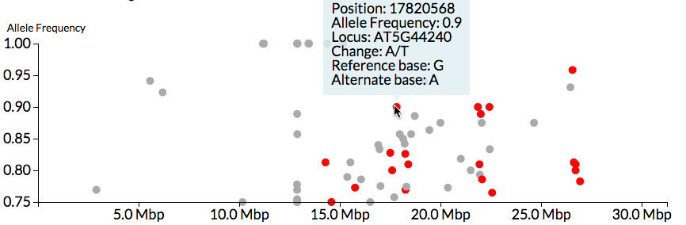

CandiSNP:
identifying candidate SNPs
in
genomes
CandiSNP classifies, annotates and visualises SNPs on genomes. Provide it with a list of SNP positions and allele frequencies and CandiSNP will return the type of each SNP and an interactive visualisation that you can explore to identify potential causative mutations.
If you use CandiSNP please cite: Etherington, Monaghan et al "Mapping mutations in plant genomes with the user-friendly web application CandiSNP." Plant Methods 2014, 10:306. doi:10.1186/s13007-014-0041-7.
1. Select the organism & genome version
CandiSNP will classify your SNPs from the genome annotations you choose
Control Panel
- Non-synonymous coding CT/GA
- Non-synonymous coding
- Annotated region
- Non-annotated region
Set allele frequency range
Help
1. Pre-processing your SNP data
CandiSNP works on pre-processed, filtered, high-confidence SNPs that you provide, there are lots of ways of preparing SNP data. Here are some hints on how to go about this:
- The simplest way is with the spreadsheet or VCF file that is provided by your sequence service, if you employed one to do SNP calls for you. These files can be edited in Excel or another spreadsheet program to include the columns with headers 'Chr', 'Pos', 'Ref', 'Alt' and 'Allele_Freq', as appropriate. They can be in any order, any other columns present are just ignored. Chromosome names are important. See the 'Selecting a genome' section below for exact details of the names you must use. Save the file as a 'comma-separated values file' for direct use in CandiSNP
- If you have an alignment file, such as a BAM or SAM file and you need to determine the SNPs from this yourself, you can use many published workflows such as those at Galaxy. We used the following command-line script in our work linked here.
2. Selecting a genome
The genome annotations for TAIR10, TAIR9, Rice genome v7, Tomato genome v2.40, Glycine max genome 1.09v8, Grape genome v1 and Maize B73 v5b are currently available in CandiSNP. It is essential that the chromosome names in column 'Chr' match that in the database. Here are the chromosome names for each genome build:
| Genome | Chromosome names |
|---|---|
| TAIR10 | 1, 2, 3, 4, 5, M, C |
| TAIR9 | 1, 2, 3, 4, 5, M, C |
| Rice genome v7 | 1, 2, 3, 4, 5, 6, 7, 8, 9, 10, 11, 12, Un, Sy |
| Tomato genome v2.40 | SL2.40ch00, SL2.40ch01, SL2.40ch02, SL2.40ch03, SL2.40ch04, SL2.40ch05, SL2.40ch06, SL2.40ch07, SL2.40ch08, SL2.40ch09, SL2.40ch10, SL2.40ch11, SL2.40ch12 |
| Glycine max genome 1.09v8 | Gm01, Gm02, Gm03, Gm04, Gm05, Gm06, Gm07, Gm08, Gm09, Gm10, Gm11, Gm12, Gm13, Gm14, Gm15, Gm16, Gm17, Gm18, Gm19, Gm20 and 21 to 2287 |
| Grape genome v1 | 1, 2, 3, 4, 5, 6, 7, 8, 9, 10, 11, 12, 13, 14, 15, 16, 17, 18, 19, 1_random, 10_random, 11_random, 12_random, 13_random, 16_random, 17_random, 18_random, 3_random, 4_random, 5_random, 7_random, 9_random |
| Maize B73 v5b | 1, 4, 2, 3, 5, 7, 8, 6, 9, 10, UNKNOWN, Mt, Pt |
3. Upload
Once your file is prepared click or drop your file into the 'Click to select or drop a data file to begin' area. Upload will begin and your data will be analysed. When it is done, an interactive plot will be displayed on the screen.
4. Control Panel
When the plot appears, a control panel to determine it's data and appearance is also displayed, it has four sections
- 'Choose Spot Colours' - set the colours of the spots representing SNPs of different classes
- 'Set Allele Frequency Range' - set the upper and lower limit of the Allele Frequency in which to show SNPs
- 'Hide Centromere Region SNPs' - for the genome assemblies with known centromere positions, clicking this button will hide SNPs within 0.5 Mb +/- the centromeres
- 'Download SVG/PNG/Annotated SNPs' - will send CandiSNP images or an annotated table to your computer
5. The Plot
You will see a plot like this for every contig or chromosome of your chosen assembly.
- The spots represent SNPs, these are plotted on the X-axis according to position on the chromosome and on the Y-axis according to allele frequency
- Hovering over spots with the mouse pointer brings up a blue box containing summary information for that SNP
- Spots are coloured according to the colour scheme set in the control panel
6. Plotting Tips
- I just see a splodge of spots...
If you have too many spots to see the distinctions, first set the upper and lower limit of the Allele Frequency slider, this should reduce some. Also note that you can set the transparency of the spots in the plot - use the colour selector and press the 'more' button, the slider that appears lets you set the transparency of the current colour. Lastly, try reducing the number of SNPs in your file - there is a fair chance that you have lots of false positive SNPs if you have too many to plot clearly.